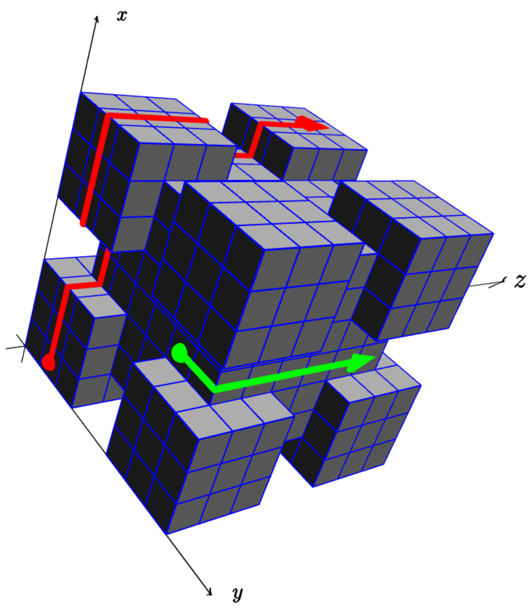

ICPC World Finals 2020 · Problem K
Place-Y Technology Corp. plans to launch a new space station soon. The company CEO is known for being obsessed with perfection. For example, he insists that all the outer surfaces of the space station are regularly polished and cleaned of what he calls “space debris,” mainly for the station to appear good in photos. The engineering team tried but failed to convince the CEO that this was not needed. So instead they developed an innovative technology to maintain the surfaces while minimizing human operations outside the station. The maintenance is performed by several small robots moving over the space station surface, just like robotic vacuum cleaners. Before their first flight, Place-Y needs to assess the risks of collision during the operation of the robots. And this is exactly where you step in.
For the purposes of this problem, we model the space station as a collection of axis-aligned unit cubes (not necessarily connected). Each robot starts at time t = 0 in the center of an exposed face of one of the station’s unit cubes (that is, a face which is not shared by a second station cube). The robot is oriented in one of the four directions parallel to an edge of the cube face. Every time unit, the robot moves straight ahead to another cube face, possibly pivoting 90 degrees across the space station edges so that it always maintains contact with the station. Note that if two cubes share an edge, the robot cannot slip between them (there is no gap).

Given the layout of the station and starting positions of all the cleaning robots, determine the time of the earliest collision (if any). The time a collision occurs is either the time unit when two or more robots are on the interior of the same cube face or the time unit when two robots attempt to swap locations (see Sample Input 3 for the latter case).
The first line of input contains two integers n and k, where n (1 ≤ n ≤ 100) is the number of regions describing the space station shape, and k (0 ≤ k ≤ 100) is the number of robots on the surface.
Each of the following n lines contains six integer coordinates x1, y1, z1, x2, y2, and z2 (0 ≤ x1 < x2 ≤ 106, 0 ≤ y1 < y2 ≤ 106, 0 ≤ z1 < z2 ≤ 106) describing one region and denoting that all the points x, y, z satisfying x1 ≤ x ≤ x2, y1 ≤ y ≤ y2, z1 ≤ z ≤ z2 are part of the space station. Note that some unit cubes may be included in more than one region.
Then follow k lines, each describing the starting position of one robot. Such a line contains three coordinates x, y, and z, and two directions f ~ and d ~. The coordinates specify that the robot starts at a face of the unit cube (x, y, z) − (x + 1, y + 1, z + 1). The particular face is determined by f ~ and the initial direction of movement is determined by d ~. Both f ~ and d ~ are specified by one of the six strings x+, x−, y+, y−, z+, or z−, where x+ designates the positive direction of the x-axis (1, 0, 0), and so on. The axis letter in f ~ will be different from the axis letter in d ~. It is guaranteed that the starting cube belongs to the space station and the given face is an exposed face.
Output the time of the first collision. If there will never be a collision, output ok.
9 2 1 1 1 7 7 7 0 0 0 3 3 3 5 0 0 8 3 3 0 5 0 3 8 3 0 0 5 3 3 8 5 5 0 8 8 3 5 0 5 8 3 8 0 5 5 3 8 8 5 5 5 8 8 8 0 1 0 z- x+ 3 5 1 z- y+
44
1 3 0 0 0 1 1 1 0 0 0 x+ z+ 0 0 0 y+ x+ 0 0 0 z- y+
ok
1 2 0 0 0 2 1 1 0 0 0 y+ x+ 1 0 0 y+ x-
0